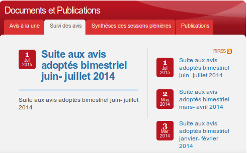

Les personnes aveugles, utilisateurs de lecteurs d'écran, accèdent aux contenus de manière séquentielle dans l'ordre dans lequel les contenus sont proposés dans le code généré de la page. Les personnes handicapées moteur, qui ne peuvent pas utiliser un système de pointage, vont parcourir les contenus interactifs de la même manière en utilisant essentiellement la tabulation.
Dans les deux cas, il est donc important que l'ordre de tabulation reste cohérent, particulièrement lorsque les contenus sont traités via JavaScript. Exemples : l'ouverture d'une fenêtre modale, la mise à jour d'un contenu dans la page ou la simple gestion d'un menu de navigation déroulant.
Il faut aussi s'assurer qu'il n'existe pas aucun « piège au clavier » qui capture l'utilisateur dans une zone ou un composant de la page sans qu'il puisse en sortir.
Ordre de tabulation cohérent
Cela recouvre deux cas : l'ordre de parcours des contenus et la gestion de la tabulation dans un composant riche ou dans des contenus contrôlés par JavaScript.
Un ordre de tabulation cohérent ne signifie pas que l'ordre de parcours des contenus doit correspondre à l'ordre naturel de lecture (de gauche à droite et de bas en haut). Les documents et les applications Web peuvent être structurés dans un ordre particulier, différent de l'ordre de lecture naturel particulièrement dans le cas d'application complexe. De même, l'ordre de parcours des contenus peut être adapté aux capacités d'un périphérique comme un téléphone portable par exemple.
Dans tous les cas, quelle que soit la structure de la page ou de l'application, l'utilisateur doit pouvoir accéder à tous les contenus de manière logique et efficace.
Quelques points de vigilance
Menu de navigation
Dans le cas d'un menu déroulant, après ouverture d'un niveau de ce menu, la tabulation doit permettre d'accéder immédiatement au sous-menu. De fait, si le menu et ses sous-menus sont mal structurés, par exemple avec des listes successives au lieu de listes imbriquées, certains utilisateurs pourraient être dans l'incapacité d'atteindre les sous-menus à la tabulation.
Affichage et masquage de contenus.
Dans le cas d'une fonctionnalité permettant d'afficher un contenu masqué, par exemple un formulaire de connexion ou une zone de recherche, il est logique que la prochaine tabulation permette à l'utilisateur d'interagir avec le contenu affiché. Si dans le code, le contenu affiché est situé immédiatement après le lien ou le bouton permettant de l'afficher, l'ordre de tabulation sera naturellement satisfaisant, quelle que soit la position de la zone affichée dans la page. Dans le cas inverse, il sera nécessaire de transférer le focus de tabulation sur la zone affichée afin de restaurer un ordre de tabulation cohérent.
Dans certains cas, comme pour une fenêtre modale, ce parcours de tabulation devra correspondre à un modèle précis (cf. plus bas).
Zone de mise à jour
Comme pour les zones affichées ou masquées, lorsqu'une fonctionnalité JavaScript met à jour une zone de la page, par exemple une zone d'actualité, il est logique que la prochaine tabulation permette à l'utilisateur de parcourir la zone mise à jour.
Attention : ce n'est pas forcément un cas systématique !
Pour un panier mis à jour suite à la sélection d'un produit il serait particulièrement laborieux pour l'utilisateur de devoir passer par le panier à chaque mise à jour. Un autre dispositif (les « live region » ARIA) permet de prendre ces cas en charge pour optimiser l'expérience de l'utilisateur. Cette problématique sera abordée dans le chapitre ARIA.
Cas des composants riches basés sur un motif de conception ARIA
 Lorsque le contenu est un composant riche (une fenêtre de dialogue (dialog), un système d'onglets (tabpanel), …) l'API ARIA définit des « motifs de conception » qui décrivent précisément le comportement de la tabulation. Celui-ci peut être très différent du comportement dans des contenus textuels.
Par exemple, dans un système d'onglets l'accès aux différents onglets ne sera pas pris en charge par la tabulation, mais par les flèches de direction, à l'image de la manipulation de ce type de composant dans les interfaces logicielles. Le principe de ces parcours de tabulation sera présenté dans le chapitre traitant de la compatibilité des composants riches avec les technologies d'assistance.
Piège au clavier
Il y a un « piège au clavier » lorsque l'utilisateur ne peut pas quitter sa position actuelle. Autrement dit, l'utilisateur ne peut atteindre ni l'élément focusable suivant, ni l'élément focusable précédent avec la touche tabulation. Dans cette situation, s'il ne navigue qu'avec la touche tabulation, sa seule échappatoire sera de fermer son navigateur.
Ce problème vient très souvent d'une mauvaise conception de la fonctionnalité ou du composant contrôlé qui se révèle être utilisable uniquement à la souris.
Chaque fonctionnalité développée qui met en jeu le focus doit être vérifiée au clavier pour éviter ce genre de catastrophe pour l'utilisateur.
Note importante : dans certains navigateurs (Firefox par exemple), l'insertion d'une balise object peut provoquer un piège au clavier. Il s'agit d'un bug et ce n'est pas considéré comme une non-conformité, du point de vue du RGAA.